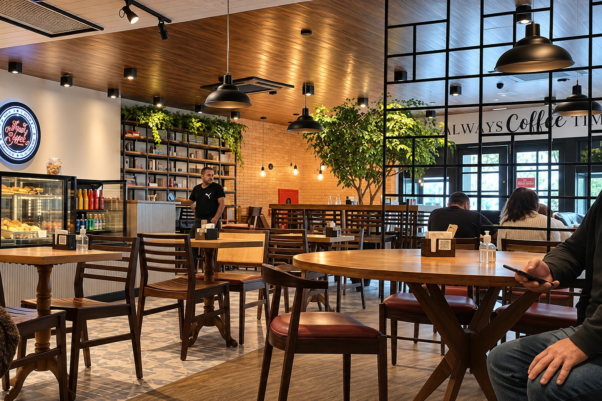

ALPHAVILLE · BARUERI
It’s always
coffee time.
Um pedaço de Nova York em Alphaville.
Café, brunch e boas conversas.

SOBRE A CAFETERIA
Nova York,
bem aqui.
A inspiração nova-iorquina está na arquitetura e no cardápio. Na unidade Rio Negro, você pode passar para um espresso, combinar um brunch com amigos ou fazer uma pausa para um café com bolo.
Confira no InstagramAVALIAÇÕES
Quem já tomou
um café por aqui.
“Tomamos um café maravilhoso com alguns acompanhamentos e foi uma experiência muito boa.”
“Sempre um ótimo atendimento exemplar.”
5/5 em comida, atendimento e ambiente.
UNIDADE RIO NEGRO
Seu próximo
café é aqui.
- Endereço
- Alameda Rio Negro, 1030
Alphaville, Barueri – SP - Horário
- Todos os dias, das 8h às 20h
- Estacionamento
- Vagas gratuitas em frente à cafeteria, sujeitas à disponibilidade.